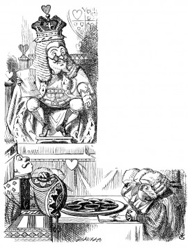

'He must have imitated somebody else's hand,' said the King. (The jury all brightened up again.)
'Please your Majesty,' said the Knave, 'I didn't write it, and they can't prove I did: there's no name signed at the end.'
'If you didn't sign it,' said the King, 'that only makes the matter worse. You MUST have meant some mischief, or else you'd have signed your name like an honest man.'
There was a general clapping of hands at this: it was the first really clever thing the King had said that day.
'That PROVES his guilt,' said the Queen.
'It proves nothing of the sort!' said Alice. 'Why, you don't even know what they're about!'
'Read them,' said the King.
The White Rabbit put on his spectacles. 'Where shall I begin, please your Majesty?' he asked.
'Begin at the beginning,' the King said gravely, 'and go on till you come to the end: then stop.'
These were the verses the White Rabbit read:--
'They told me you had been to her, And mentioned me to him: She gave me a good character, But said I could not swim.
He sent them word I had not gone (We know it to be true): If she should push the matter on, What would become of you?
I gave her one, they gave him two, You gave us three or more; They all returned from him to you, Though they were mine before.
If I or she should chance to be Involved in this affair, He trusts to you to set them free, Exactly as we were.
My notion was that you had been (Before she had this fit) An obstacle that came between Him, and ourselves, and it.